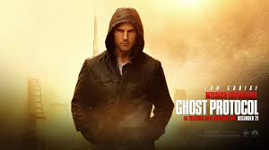
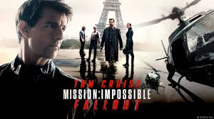
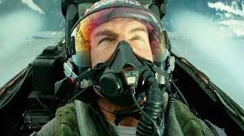
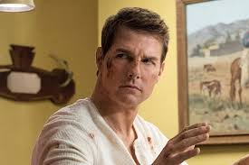

Cruise was born Thomas Cruise Mapother in Syracuse, New York, on July 3, 1962,[6] the son of special education teacher Mary Lee and electrical engineer Thomas Cruise Mapother His parents were both from Louisville, Kentucky,[8][9] and had English, German, and Irish ancestry.[10][11] Cruise has three sisters named Lee Anne, Marian, and Cass. One of his cousins, William Mapother, is also an actor who has appeared alongside Cruise in five films.[12] Cruise grew up in near poverty and had a Catholic upbringing.Cruise spent part of his childhood in Canada. When his father took a job as a defense consultant with the Canadian Armed Forces, his family moved in late 1971 to Beacon Hill, Ottawa.[14] He attended the new Robert Hopkins Public School for his fourth and fifth grade education.
At age 18,[22] with the blessing of his mother and stepfather, Cruise moved to New York City to pursue an acting career.[20] After working as a busboy in New York, he went to Los Angeles to try out for television roles. He signed with CAA and began acting in films.[22] He first appeared in a bit part in the 1981 film Endless Love, followed by a major supporting role as a crazed military academy student in Taps later that year. In 1983, Cruise was part of the ensemble cast of The Outsiders. That same year he appeared in All the Right Moves and Risky Business, which has been described as "A Generation X classic, and a career-maker for Tom Cruise",[23] and which, along with 1986's Top Gun, cemented his status as a superstar.[24] Cruise also played the male lead in the Ridley Scott film Legend, released in 1985.[25].His famous movies are:
1-Mission Impossible:Ghost Protocol Mission Impossible:Ghost Protocol
2-Mission Impossible:Fall out Mission Impossible:Fall out
3-Top GunTop Gun
4-Jack The ReacherJack The Reacher
5-CollateralCollateral
Cruise partnered with his former talent agent Paula Wagner to form Cruise/Wagner Productions in 1993,[54] and the company has since co-produced several of Cruise's films, the first being Mission: Impossible in 1996 which was also Cruise's first project as a producer. Cruise in 2016 Cruise is noted as having negotiated some of the most lucrative film deals in Hollywood, and was described in 2005 by Hollywood economist Edward Jay Epstein as "one of the most powerful – and richest – forces in Hollywood." Epstein argues that Cruise is one of the few producers (the others being George Lucas, Steven Spielberg and Jerry Bruckheimer) who are regarded as able to guarantee the success of a billion-dollar film franchise. Epstein also contends that the public obsession with Cruise's tabloid controversies obscures full appreciation of Cruise's exceptional commercial prowess.[55]